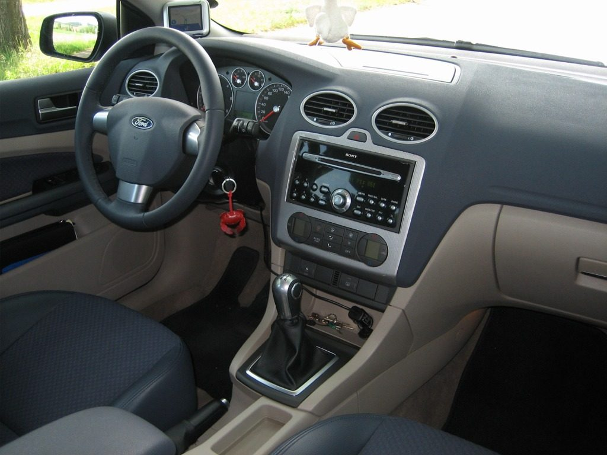
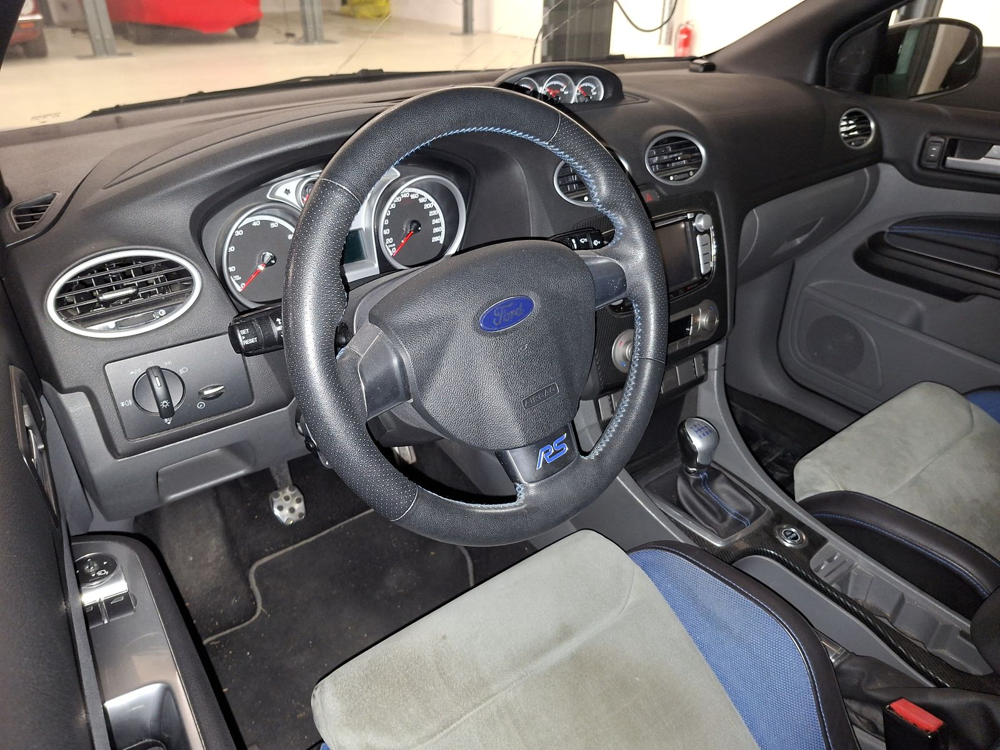
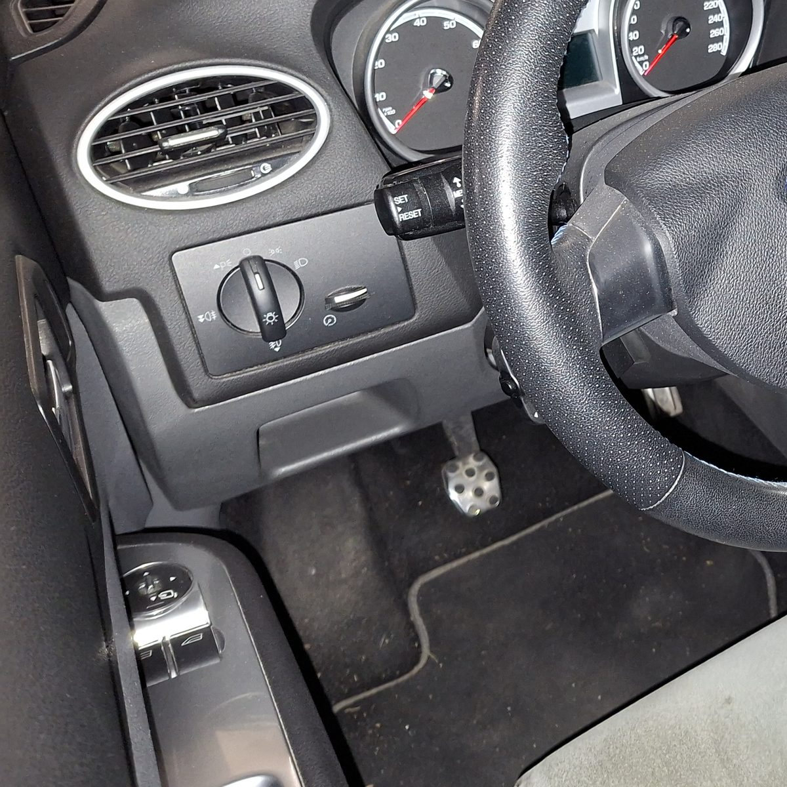
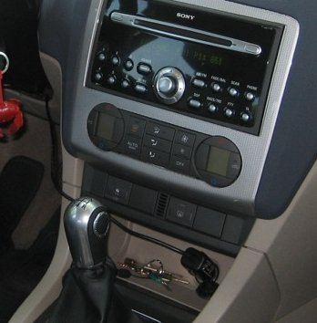
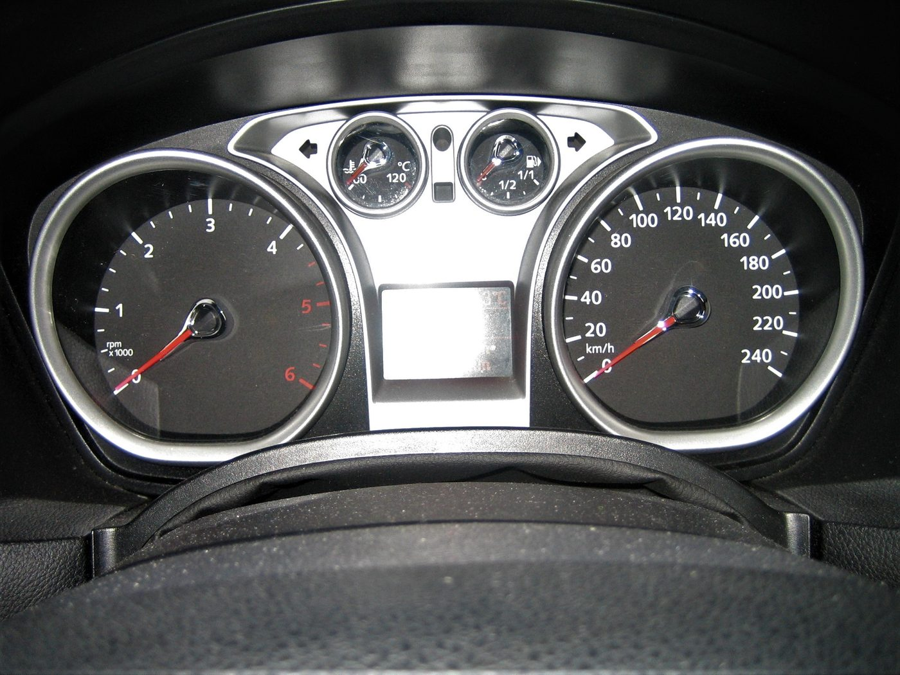
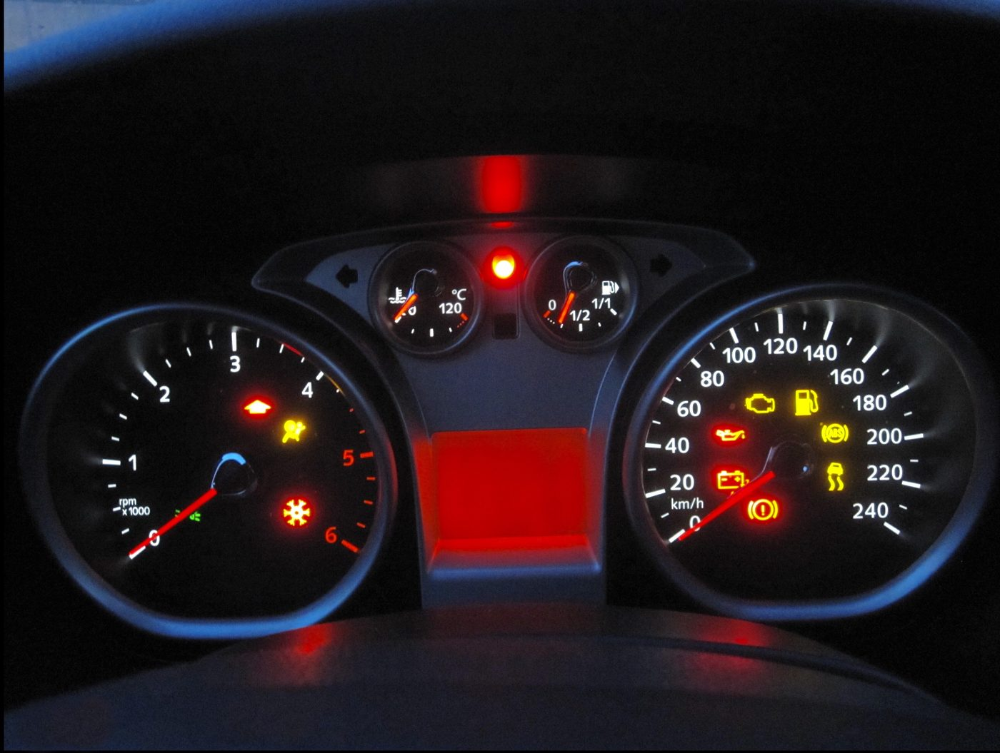

Теоретический курс · Урок 1
Привет. Это первый урок теории — его стоит спокойно прочитать до занятия на площадке, лучше не «по диагонали», а так, будто инструктор сидит рядом и всё показывает руками.
На занятии ты впервые сядешь за руль учебного Ford Focus 2 с обычной механической коробкой: передачи переключаешь сам, левой ногой работаешь со сцеплением. В город мы не поедем. Сначала разберёмся, что у тебя под руками и перед глазами, как завести мотор, как тронуться и как остановиться. Потом — медленный круг и восьмёрка.
Текст написан для человека, который за рулём ещё почти не сидел. Каждую вещь мы «разжёвываем»: как называется, зачем нужна, как пользоваться и что ты при этом почувствуешь.
Занятие идёт на учебной площадке. Примерно так:
Инструктор будет говорить короткими фразами. Заучивать урок наизусть не нужно: достаточно, чтобы на площадке его слова уже были знакомыми. Если что-то непонятно — спрашивай сразу. Глупых вопросов на первом занятии не бывает.
Чтобы потом не спотыкаться, вот короткий словарик.
Сцепление — левая педаль. Она как рукопожатие между мотором и колёсами: педаль в пол — они расцеплены; педаль отпущена — мотор снова крутит колёса.
Нейтраль (нейтральное положение) — ни одна передача не включена. Рычаг коробки свободно качается влево и вправо посередине. В нейтрали мотор может работать, а машина сама не поедет.
Передача — ступень коробки. Первая — для трогания и очень медленной езды, вторая чуть быстрее и так далее. Задняя — чтобы ехать назад.
Кулиса — так часто называют рычаг коробки. Для тебя это рукоятка между сиденьями со схемой передач на ней.
Точка схвата (её ещё называют моментом схватывания) — положение педали сцепления, в котором мотор только-только начинает «брать» колёса. Машина слегка вздрагивает и может сама поехать совсем медленно. Это самое важное ощущение первого занятия.
Ручник (стояночный тормоз) — рычаг между сиденьями. Он держит машину на месте, когда ты уже не нажимаешь педаль тормоза: на стоянке, на уклоне, перед троганием.
Обороты — как быстро крутится мотор. Их показывает тахометр. Когда обороты падают слишком низко под нагрузкой, мотор может заглохнуть — как будто велосипед остановили, не снимая тебя с педалей.
Пока сиденье, ремень и зеркала не настроены, за руль «просто сесть и поехать» рано. Удобная посадка — это не комфорт «для красоты». От неё зависит, достанешь ли ты педали до пола, увидишь ли соседей по площадке и не устанешь ли за занятие.
Сядь так, чтобы спина опиралась на спинку, а не «висела» вперёд. Под сиденьем спереди обычно есть скоба (поперечная ручка). Потяни её вверх и сдвинь сиденье ближе или дальше.
Как понять, что расстояние правильное: нажми левой ногой педаль сцепления до пола. Нога должна быть чуть согнута в колене. Если она совсем прямая, сиденье слишком далеко: ты не выжмешь сцепление до конца, и машина может дёрнуться или заглохнуть. Если колено почти упирается в руль, ты сидишь слишком близко.
Справа (с внешней стороны подушки сиденья) есть рычаг наклона спинки. Откинь или подними спинку так, чтобы запястья лежали на верхней точке руля, а лопатки при этом не отрывались от сиденья. Руки чуть согнуты в локтях.
На части Focus 2 есть ещё рычаг высоты сиденья — обычно «насос» сбоку: качаешь вверх или вниз. Если такого рычага нет, ничего страшного: настрой то, что есть. Высоту подбирают так, чтобы хорошо видеть дорогу перед капотом и приборы, а голова не упиралась в потолок.
Инструктор поможет. Не стесняйся попросить подвинуть сиденье ещё раз: лучше две минуты сейчас, чем всё занятие тянуться к педалям.
Подголовник — не «подушка для шеи в пробке». Он нужен, чтобы при резкой остановке или ударе сзади голова не опрокинулась назад.
Потяни подголовник вверх или, чтобы опустить, нажми кнопку сбоку и сдвинь вниз. Правильно, когда затылок приходится примерно на середину подголовника, а не когда подушка стоит у шеи. Держи его близко к голове, не в десяти сантиметрах позади.
Ремень пристёгивают до того, как заводят мотор, и тем более до начала движения.
Замок ремня — у бедра, ближе к середине машины. Язычок вставляешь до щелчка. Снимаешь нажатием красной кнопки на замке.
Ремень должен идти по плечу и груди, а внизу — по костям таза, то есть по поясу, а не по мягкому животу. Если лента режет шею или наоборот сползает с плеча, на стойке у двери обычно есть регулятор высоты: кнопку или клавишу зажимаешь и двигаешь якорь ремня вверх или вниз.
Не прячь ремень под руку, не откидывай за спину и не оставляй слабину. Если лента давит или перекручена, поправь сейчас, не на ходу.
Зеркала настраивают сидя в той позе, в которой будешь ехать, уже пристегнувшись.
Салонное зеркало — в центре, у ветрового стекла. Возьмись за него и поверни так, чтобы в нём было видно заднее стекло целиком, а не потолок и не своё ухо. На части машин снизу у зеркала есть маленький рычажок «день/ночь»: ночью его щёлкают, чтобы свет фар сзади не слепил. Днём рычажок обычно оставляют в положении «день».
Боковые зеркала на Focus 2 почти всегда регулируются с двери водителя. На подлокотнике левой двери есть джойстик (кружок, который качается) и переключатель выбора зеркала: L — левое, R — правое. Выбери зеркало, затем джойстиком чуть наклони его.
Как настроить просто: в левом зеркале ты чуть-чуть видишь край своего автомобиля (ручку или бок) и большой кусок дороги слева и сзади. В правом — так же свой край и дорогу справа-сзади. Если в зеркале одна только твоя дверь, зеркало завалено слишком внутрь. Если машины не видно совсем и только небо, оно завалено слишком вверх.
«Мёртвая зона» — кусок пространства сбоку, которого не видно ни в одном зеркале. Позже научимся перед манёвром ещё и быстро поворачивать голову. Сегодня главное — чтобы зеркала уже были настроены и ты привык в них взглядывать.
Когда пристёгивают ремень?


Пройдёмся по салону сверху вниз и слева направо. На учебной машине мелочи могут отличаться: где-то есть подогрев сидений или датчик дождя, где-то нет. Если кнопки нет — на этой комплектации её просто не ставили. Инструктор покажет именно вашу машину.
Две руки на руле, примерно на девяти и на трёх. Большие пальцы — вдоль обода, не в кольцо «насмерть».
Руль держим двумя руками, примерно в положении «без десяти два» или «девять и три» — как стрелки на часах. Большие пальцы лежат вдоль обода, не в кольцо «насмерть». Так руки меньше устают, и руль удобнее поворачивать.
Посередине руля (или на накладке ступицы) — клаксон, звуковой сигнал. Нажимаешь на эту площадку. Сегодня он почти не понадобится, но место лучше знать сразу.
Под рулевой колонкой, обычно слева снизу, есть рычажок фиксации. Им регулируют положение руля:
Руль регулируют только на стоящей машине, не на ходу.
Слева направо: сцепление, тормоз, газ. Правая нога никогда не стоит на двух педалях сразу.
Педалей три. Слева направо:
Запомни как таблицу умножения: левая нога работает только со сцеплением. Правая — только с тормозом и газом, и никогда с двумя сразу. Когда тормозишь — газ отпускаешь. Когда газуешь — с тормоза уходишь.
Слева от сцепления часто есть площадка-упор для левой ноги. Когда сцепление не нужно, ногу удобно ставить туда, а не держать на весу.
Сцепление нажимай до пола, уверенно, подушечкой стопы. Тормоз — уверенно, но без удара «со всего размаха». Газ — самое нежное движение, будто нажимаешь на колпачок фломастера.
Заднюю на Focus 2 почти всегда включают так: приподнять кольцо под рукояткой и вести рычаг влево-вперёд. Если схема на рычаге другая — смотри на неё.
Рычаг стоит между сиденьями, рядом с ручником. На рукоятке нарисована схема передач — всегда сверяйся с ней.
На учебном Focus 2 с механикой обычно пять передач вперёд и задняя. Типичная схема выглядит так:
То есть: первая — влево и вперёд; вторая — влево и назад (на себя); третья — из середины вперёд; четвёртая — из середины назад; пятая — вправо и вперёд; задняя (R) — ещё левее первой, обычно тоже вперёд.
Как включить заднюю на Focus 2. На большинстве таких машин под рукояткой есть кольцо (юбка, «колечко»). Его нужно приподнять пальцами и только потом вести рычаг влево и вперёд — левее первой передачи. Кольцо как раз не даёт включить заднюю случайно вместо первой. Если на вашей рукоятке схема или фиксатор выглядят иначе — смотри схему на рычаге и повтори движение за инструктором. Не угадывай.
Нейтраль находится посередине, между рядами передач. Как проверить: слегка покачай рычаг влево-вправо. Если он ходит свободно, как в широком пазу, ты в нейтрали. Если рычаг упруго стоит в одном «гнезде» и сам не гуляет, включена какая-то передача.
Передачу включают спокойно, не ударом. Сцепление при этом выжато в пол — иначе услышишь хруст, и передача может не войти. Если первая не входит, не дави изо всех сил: выжми сцепление ещё раз или коротко верни рычаг в нейтраль и повтори.
Сегодня почти всё время нам нужна будет первая. Заднюю на круге и восьмёрке не включают, если инструктор сам об этом не попросит.
Ручник — рычаг между сиденьями, обычно с кнопкой в торце рукоятки.
Чтобы поставить машину на ручник, потяни рычаг вверх до упора. В комбинации приборов загорится красная контрольная лампа тормоза — машина напоминает: «я на стояночном тормозе».
Чтобы снять ручник: чуть подними рычаг вверх (снимешь нагрузку с кнопки), нажми кнопку в торце и опусти рычаг вниз до конца. Красная лампа должна погаснуть. Если лампа горит, а рычаг уже внизу, скажи инструктору: это уже не «напоминалка», а возможная неисправность тормозов.
Перед троганием ручник нужно снять. Если забыть, машина не поедет или поползёт тяжело и может заглохнуть. Короткий взгляд на рычаг и на лампу это лечит.
Замок — справа на рулевой колонке. Ключ вставляется в него и поворачивается. У ключа четыре положения, они щёлкают:
Очень важное правило: во время движения ключ не вынимают и зажигание не выключают. Если вынуть ключ на ходу, руль может заблокироваться, и машина перестанет слушаться.
Слева за рулём торчит рычажок. Это твой левый подрулевой переключатель.
Указатели поворота: рычаг вниз — левый поворот; рычаг вверх — правый. Когда руль возвращается «прямо», рычажок часто сам щёлкает обратно. Если не щёлкнул — верни его в среднее положение руками. На панели при этом мигает зелёная стрелка, и слышен спокойный щелчок («тиканье»).
Если сдвинуть рычаг чуть-чуть, только до лёгкого упора, и отпустить, поворотники на многих Focus 2 мигнут три раза — это для смены полосы. На площадке сегодня проще фиксировать рычаг до щелчка.
Дальний и «моргание». На Focus 2 ближний и дальний переключают тем же левым рычагом, но уже движением к себе, к рулю:
Ощущение «одной и двух позиций» лучше один раз сделать руками вместе с инструктором. На дневной площадке дальний почти наверняка не понадобится, но стоит понять, где на рычаге «поворот», а где «свет». Кнопки меню бортового компьютера, если они есть на рычаге, на первом занятии можно не трогать.

Свет фар на большинстве Focus 2 включается не рычагом, а отдельной крутилкой слева на панели, около приборной доски. Новички часто ищут свет на подрулевом рычаге и не находят.
Поворотом рукоятки обычно выбирают:
Рядом часто стоит корректор фар — маленькая крутилка с цифрами 0, 1, 2… Она чуть опускает пучок света, чтобы не слепить встречных, когда машина загружена. На площадке с инструктором обычно оставляют 0.
Противотуманные фонари чаще всего включают той же рукояткой: её ставят в положение фар и вытягивают на одну позицию (задняя «противотуманка») или на две (передние). Задняя лампа на панели обычно жёлтая, передние — зелёные. Их включают в туман, снежную муть или сильный дождь, а не «для красоты». На дневной площадке, как правило, не нужны: если не уверен — спроси, не экспериментируй вслепую.
На части более ранних комплектаций свет может включаться кольцом прямо на левом рычаге. Если у вас именно так — инструктор покажет. Смысл положений тот же: выключено, габариты, фары.
Справа за рулём — рычаг стеклоочистителей («дворников»). Он работает при включённом зажигании и щёлкает по положениям:
Инструктор покажет, в какую сторону вести рычаг на вашей машине — вверх или вниз по щелчкам.
Омыватель лобового стекла на Focus 2 обычно включается кнопкой на торце этого рычага (или отдельным движением, которое покажет инструктор). Брызгает жидкость, щётки сами делают несколько взмахов и после отпускания ещё чуть подтирают стекло. Не включай омыватель «насухую», если бачок пустой: насос скрежещет, а щётки могут поцарапать стекло.
Задний дворник есть на хэтчбеке и универсале (на седане его обычно нет). На Focus 2 его чаще включают, сдвигая правый рычаг к рулю на одну позицию. На две позиции к рулю — омыватель заднего стекла. Если включена задняя передача, задний дворник на части машин может включиться сам — не пугайся.
«Аварийка» — большая кнопка с красным треугольником, обычно в центре панели, над печкой или рядом с магнитолой. При нажатии мигают все указатели поворота сразу, и на панели мигают обе зелёные стрелки.
Аварийка работает при любом положении ключа, даже если зажигание выключено. Её включают при неожиданной остановке, аварии или чтобы предупредить: «я здесь». Запомни, где кнопка. Не нажимай её «на пробу» посреди объяснения — мигание отвлекает.

В центре панели, ниже магнитолы, стоит блок «печки». На Focus 2 это обычно три круглые рукоятки и несколько кнопок.
Как отпотеть или отогреть лобовое. Поставь распределение на стекло, вентилятор — поярче, температуру — в тепло. Если есть кнопка кондиционера (A/C), в сырую погоду её полезно включить: кондиционер не только холодильник, он ещё и сушит воздух, и стекло отпотевает быстрее.
Кнопка рециркуляции (часто значок машины со стрелкой по кругу) гоняет воздух по салону, не забирая новый с улицы. Это хорошо, если снаружи пыль или выхлоп. Но если стёкла потеют, рециркуляцию лучше выключить: иначе влажный воздух из салона ещё больше оседает на стекле.
Обогрев заднего стекла — кнопка с прямоугольником и пунктирными стрелками. Включается при зажигании в положении II, в кнопке загорается лампочка, через какое-то время часто выключается сама. Не три нити обогрева изнутри скребком.
На части Focus 2 есть ещё обогрев лобового стекла и крутилки подогрева сидений. Если они есть — инструктор покажет. На первом занятии достаточно, чтобы тебе не было душно и чтобы лобовое было прозрачным. Воздух выходит из решёток по центру и по краям панели; рычажком в решётке можно направить поток или прикрыть его.
На подлокотнике левой двери обычно такой набор:
Если идёт дождь или инструктор просит закрыть окно, закрывай до конца. Если вместо клавиш стоят обычные ручки — крути их руками, так бывает на части учебных машин.
Коротко, чтобы в салоне не осталось таинственных вещей:
Какой ногой работают с педалью сцепления?

Перед тобой, за рулём, — комбинация приборов. На Focus 2 обычно два больших круглых циферблата и несколько указателей и окошек между ними.
Спидометр показывает скорость в километрах в час. Это большой циферблат, чаще справа. Сегодня мы едем очень медленно, стрелка может почти не отойти от нуля — так и должно быть. Смотри в первую очередь на дорогу, на спидометр — коротким взглядом.
Тахометр — второй большой циферблат, чаще слева. Он показывает обороты двигателя, обычно в тысячах: «2» — это две тысячи оборотов в минуту. Когда ты подводишь сцепление к точке схвата, стрелка часто чуть опускается, а звук мотора становится чуть ниже и «тяжелее». Это один из признаков схвата. Если стрелка падает очень низко и мотор начинает дрожать, чуть дожми сцепление обратно, дай мотору «вздохнуть». Красная зона на тахометре — слишком высокие обороты. Сегодня мы туда не попадём: газуем мало и спокойно.
Рядом живут два маленьких указателя.
Топливо — значок колонки. F или полная шкала — бак ближе к полному, E или пустая шкала — к пустому. Привыкай взглянуть на указатель до занятия. Если стрелка у пустой зоны или горит жёлтая лампа колонки — скажи инструктору. Маленькая стрелочка у пистолета на значке часто подсказывает, с какой стороны лючок бака.
Температура охлаждающей жидкости — значок термометра. Сразу после запуска стрелка может сидеть внизу: мотор ещё холодный. По мере прогрева она поднимается к середине — это рабочая зона. Если стрелка уходит в красную зону или загорается красная лампа перегрева, мотор слишком горячий. Тогда останавливаемся, глушим (как скажет инструктор) и не открываем сразу крышку радиатора: оттуда может ударить кипятком.
В маленьком окошке горят цифры пробега. Одометр — общий пробег машины, большое число, которое обычно нельзя обнулить. Суточный пробег (trip) — маленький счётчик, который можно сбросить: удобно понять, сколько проехали сегодня. Переключают и сбрасывают их обычно кнопкой на комбинации приборов или на подрулевом рычаге: короткое нажатие меняет окошко, нажатие с удержанием обнуляет суточный пробег.

Когда поворачиваешь ключ в положение II, на панели на секунды вспыхивает сразу много лампочек. Это не поломка, это самопроверка: машина проверяет, что лампы живы. После запуска мотора большая часть из них должна погаснуть.
Запоминать нужно не сотню картинок сразу, а правило цветов:
Ниже — самые частые значки на Focus 2. Вызубрить все за вечер не нужно: прочитай, чтобы картинка была знакомой. Если после запуска горит лампа не из списка, не гадай — скажи инструктору.
На узком экране каждая лампа — отдельная карточка. Можно также нажать значок выше.
| Значок | Цвет | Что означает | Что тебе делать |
|---|---|---|---|
| Маслёнка | Красный | Упало давление масла, мотор может быстро пострадать | Остановись, выжми сцепление, затормози, заглуши, скажи инструктору. Дальше не едем «на минуточку» |
| Аккумулятор («+» и «−») | Красный | Генератор не заряжает батарею | Скажи инструктору. Оставлять «на потом» нельзя: может сесть электрика |
| Восклицательный знак в круге, иногда с P | Красный | Ручник или система тормозов | Если ручник поднят — так и должно гореть. Если уже снят, а лампа горит (тем более вместе с ABS) — не едем, зовём инструктора |
| Человечек с «мешком» | Красный | Неисправность подушки безопасности | Решение на площадке принимает инструктор, но это неисправность, её нельзя «подождать» |
| Человечек с ремнём | Красный | Обычно просто не пристёгнут | Пристегнись. Если ремень защёлкнут, а лампа всё равно горит — скажи инструктору |
| Термометр, иногда с волнами | Красный | Перегрев двигателя | Останавливаемся, глушим, как скажет инструктор. Крышку горячего радиатора сразу не открываем |
| Схематичная машина с открытой дверцей | Красный (если есть) | Открыта дверь, иногда багажник или капот | Проверь двери. На ходу с открытой дверью не едем |
| Контур мотора (Check Engine) | Жёлтый | Электроника заметила неисправность | Горит ровно, мотор работает ровно — скажи инструктору, не паникуй. Если лампа мигает, а мотор троит — не газуем сильно и сразу говорим инструктору |
| Буквы ABS | Жёлтый | Антиблокировочная система тормозов неисправна | Обычные тормоза чаще всего работают, но на скользком колесо может пойти юзом. Скажи инструктору |
| Машина с извилистыми следами, иногда ESP / ESP OFF | Жёлтый (если есть) | Система стабилизации сработала, выключена или неисправна | Коротко мигнула на скользком — штатно. Горит постоянно — скажи инструктору. На первом занятии ESP не выключаем |
| Колонка | Жёлтый | Мало топлива | Скажи инструктору |
| Фонарь с волнистыми линиями | Жёлтый | Включена задняя противотуманка | Это не поломка, а индикатор. Днём её не держат включённой «на всякий случай»: слепит тех, кто сзади |
| Две стрелки | Зелёный | Включён поворотник или аварийка | Мигают вместе с «тиканьем». Если стрелка моргает после поворота — выключи рычаг |
| Значок фар или габаритов | Зелёный (на части панелей) | Включён ближний свет или габариты | Напоминание, что свет включён |
| Фара с волной | Зелёный | Включены передние противотуманки | Индикатор включения |
| Синяя фара | Синий | Включён дальний свет | Если загорелся случайно — выключи левым рычагом |
После запуска мотора на панели осталась гореть красная лампа, ручник уже снят. Что делать?
Когда посадка, ремень и зеркала готовы, можно оживлять машину. Делаем по шагам, не торопясь.
Если мотор не запустился с первой попытки, не крути стартер долго. Верни ключ в II, выдохни, через несколько секунд повтори. Если снова нет — инструктор подхватит. Если руль заблокирован и ключ не поворачивается — покачай руль и одновременно поворачивай ключ.
Точку схвата не видно глазами: её чувствуют. Кузов чуть вздрагивает, звук мотора становится чуть ниже, стрелка тахометра чуть падает.
Это сердце первого занятия. Мы трогаемся без газа до точки схвата. Так ты научишься чувствовать педаль, и машина поведёт себя спокойнее, чем если сразу мешать сцепление и газ.
Сначала ещё раз проверь: ремень застёгнут, нейтраль, мотор работает, площадка впереди свободная. Дальше — только эти шаги, в этом порядке.
Ещё раз, короткой строкой, чтобы запомнилось телом:
сцепление в пол → первая → снять ручник → подвести сцепление до схвата без газа → подержать около трёх секунд → отпустить сцепление до конца и мягко добавить газ.
Точку схвата не видно глазами на педали: её чувствуют. У каждого автомобиля она чуть в другом месте хода педали, поэтому учебный Focus нужно прочувствовать именно ногами, а не «по теории на три пальца».
Обычно в точке схвата происходит сразу несколько вещей, не обязательно все сразу:
Если ты отпустил сцепление совсем чуть-чуть и ничего не происходит — ты ещё не дошёл до схвата. Продолжай очень медленно поднимать ногу.
Если ты проскочил схват и педаль «выпрыгнула» вверх, мотор резко получил всю нагрузку, машина дёрнется и часто глохнет. Это не поломка и не оценка «двойка». Это просто слишком быстрое движение ногой.
Поэтому первые разы делай движение сцепления нарочно медленнее, чем кажется нужным. Три секунды на схвате как раз для этого: ты подтверждаешь себе: «да, я её поймал, машина уже едет», и только потом отпускаешь педаль совсем.
Газ даёт мотору больше силы. Когда человек в первый раз одновременно и газ добавляет, и сцепление отпускает, рук и ног как будто не хватает: то газа слишком много (машина прыгает), то слишком мало (глохнет), то сцепление брошено.
Мы убираем одну задачу. Мотор на холостых оборотах уже умеет медленно повезти машину, если схват пойман. Ты учишься только одной педали. Газ добавляется позже, уже когда машина ползёт и сцепление можно отпускать до конца. Тогда газ — это мягкое «помоги мотору ехать чуть увереннее», а не попытка «вылечить» брошенное сцепление.
Заглохнуть — значит, мотор остановился. Звук пропал, кузов может дрогнуть, на панели снова вспыхнут лампы. Это выглядит громче, чем есть на самом деле.
Почему так бывает чаще всего:
Что делать — спокойно, без суеты, по одному:
Не нужно сразу топтать газ «чтобы ожить». Не нужно выходить из машины. Не нужно извиняться десять раз: инструктор это видел сотни раз. Выдохнул — и с начала, с первого шага.
Когда по нашему методу добавляют газ?
На площадке мы едем медленно. Для такой езды запомни простой способ остановки:
сцепление и тормоз нажимают вместе.
То есть: левая нога — сцепление в пол, правая — тормоз. Машина останавливается, мотор продолжает работать.
Почему вместе, а не «только тормоз»? Если на малой скорости в первой передаче нажать один только тормоз и не выключить сцепление, колёса почти встанут, а мотор через коробку всё ещё будет связан с ними. Обороты упадут, и мотор часто заглохнет — как велосипед, который остановили, не снимая ног с педалей. Сцепление как раз и «расцепляет» мотор с колёсами, чтобы он мог спокойно продолжать работать, пока ты тормозишь.
Когда машина полностью остановилась:
Пока учимся, после остановки обычно оставляем сцепление нажатым, проверяем, что точно стоим, и только потом думаем о следующем трогании.
Тормоз нажимай уверенно, но без удара. Представь, что в салоне стоит стакан воды — останавливаемся так, чтобы он не упал.
Позже, на более высоких скоростях, порядок торможения будет чуть другим (сначала тормоз, сцепление — перед самой остановкой). Это не тема сегодняшнего дня. Сегодня, на круге и восьмёрке, действует правило: малая скорость — сцепление и тормоз вместе.
Когда трогание и остановка хотя бы несколько раз получились, инструктор предложит ехать по кругу, затем по восьмёрке. Это всё ещё площадка, всё ещё малая скорость, всё ещё первая передача. Никто не просит «ехать красиво». Нужно научиться смотреть туда, куда едешь, и держать скорость ровной.
Если смотреть под колёса, машина «плывёт» туда, куда ушёл взгляд, и круг становится корявым.
Ты едешь по кругу. Задача — держать примерно одну и ту же маленькую скорость и плавно рулить, без рывков.
Самое важное: смотри туда, куда хочешь ехать, а не на капот, не на свою правую руку и не на педали. Если смотреть под колёса, машина «плывёт» туда, куда ушёл взгляд, и круг становится корявым. Смотри на ту точку круга, к которой едешь, будто уже видишь свой путь на два-три корпуса впереди.
Руль крути спокойно, двумя руками. Когда угол поворота большой, руки делают перехват: одна рука поворачивает, другая перехватывает обод в удобном месте и продолжает движение. Не скрещивай руки в замок «как будто борешься с рулём» и не отпускай руль совсем, чтобы он сам раскрутился. Если не понял перехват с первого раза — это нормально, инструктор покажет руками.
Скорость держи маленькой и ровной. Если мотор просит помощи — чуть газа, без рывка. Если разогнался чуть больше, чем комфортно, спокойно притормози тем способом, который мы только что разобрали, или просто убери чуть газа. На круге не стыдно остановиться и тронуться заново.
Восьмёрка не про скорость, а про плавность и взгляд. Если срезаешь край — почти всегда виноват взгляд у капота.
Восьмёрка — это как два круга, поставленные рядом, и ты рисуешь путь в виде цифры 8. В одном месте ты меняешь направление: был поворот, скажем, налево — и плавно переходишь в поворот направо, или наоборот.
Здесь ещё важнее смотреть вперёд, уже на ту дугу, в которую сейчас въезжаешь. Руль сначала раскручиваешь обратно, почти к «прямо», и сразу плавно крутишь в другую сторону. Не торопись: восьмёрка не про скорость, а про плавность и взгляд.
Если срезаешь внутренний край или уезжаешь слишком широко, почти всегда виноват не «руль тугой», а взгляд, который остался у капота. Подними глаза, и руки часто сами начинают работать ровнее.
Глохнуть на восьмёрке тоже можно. Спокойно остановился, нейтраль, запуск, шаги трогания — и снова в путь.
Куда смотреть на круге и восьмёрке?
Бросают сцепление. Педаль как будто выскальзывает, машина прыгает и глохнет. Лечится медленным движением и тремя секундами на точке схвата. Лучше «слишком медленно», чем «слишком резко».
Смотрят на педали или на капот. Тогда круг и восьмёрка разъезжаются, а тело сгибается. Педали через несколько попыток находятся уже ногами, без взгляда вниз. Глаза — в то место, куда едешь.
Газуют слишком рано или слишком сильно. В нашем методе газ появляется только после схвата и короткой паузы, и он мягкий. Если сразу топнуть газ, пока сцепление ещё в полу, мотор будет громко реветь на месте. Если топнуть в момент схвата — будет прыжок.
Забывают снять ручник. Машина едет тяжело или стоит и глохнет. Перед подъёмом сцепления — короткий взгляд: рычаг внизу, красная лампа погасла.
Путают педали правой ногой. На первых занятиях это бывает. Заранее поставь правую ногу на газ или на тормоз — не на две педали сразу.
Не дожимают сцепление до пола, когда включают передачу или когда останавливаются. Тогда передача входит плохо, а при остановке машина может заглохнуть. До пола — значит до пола, не «почти».
Сильно сжимают руль. Руки деревенеют, руль идёт рывками. Держи уверенно, но без борьбы. Плечи опусти, дыши.
Паника, если заглох мотор. Самая частая «ошибка в голове». Помни цепочку: сцепление, тормоз, нейтраль, запуск. Тихим голосом, по шагам.
Выбери один ответ. Это не экзамен в ГАИ, а проверка, что главное зацепилось. После каждого вопроса сразу будет короткое пояснение, а в конце — общий счёт.
Ещё раз медленно проговори вслух четыре шага трогания и цепочку «заглохла — сцепление, тормоз, нейтраль, запуск». Остальное не зубри: на площадке инструктор всё покажет руками на настоящей машине. Ты уже не будешь слышать эти слова в первый раз — и этого достаточно, чтобы первое занятие прошло спокойнее.
Увидимся на площадке. Получится.
Все фотографии ниже — из Wikimedia Commons, с открытой лицензией. Мы использовали только европейский Focus Mk2 (2004–2011), не американский Focus 2008–2011: у него другой салон. Focus RS на двух кадрах — то же поколение; спортивные сиденья и шильдик отличаются от учебного 1.6, а крутилка света, рычаги и компоновка панели — те же.
Схемы передач, педалей, руля, точки схвата, круга и восьмёрки нарисованы для этого урока. Крупных открытых фото всех трёх педалей и 5-ступенчатой рукоятки учебной машины не нашлось — для них оставлены места под фото из машины инструктора.


.jpg){kind=link}